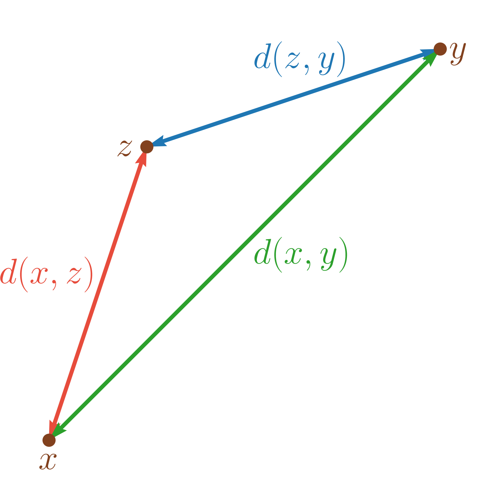

Dans tout le cours, \(\mathbb{K}=\mathbb{R}\text{ ou }\mathbb{C}\).
Soit \(E\) un ensemble non vide. On appelle distance sur \(E\), toute application \(\begin{array}{lllll} d & : & E\times E & \to & \mathbb{R}^{+} \\ & & (x,y) & \mapsto & d(x,y) \end{array}\) qui vérifie
(Symétrie) \(\forall x,y \in E, d(x,y) = d(y,x)\)
\(\forall x,y \in E\), \(d(x,y) = 0 \iff x=y\)
(Inégalité triangulaire) \(\forall x,y,z \in E, d(x,y) \leq d(x,z)+d(y,z)\).
\((E,d)\) est alors appelé un espace métrique.
Pour la distance euclidienne usuelle du plan, l’inégalité triangulaire s’interprète comme "la ligne droite est le chemin le plus rapide".

Pour \(E = \mathbb{C}\), \((x,y) \in E \mapsto \left|x-y\right|\) est une distance.
Pour \(E\) un ensemble quelconque, \(d(x,y) \in E \mapsto \left\{\begin{array}{ll} 1 & \mbox{ si $x \neq y$} \\ 0 & \mbox{ si $x=y$} \end{array}\right..\)
Si \(E = E_1 \times E_2 \times \ldots \times E_n\), \(d: (x,y) \in E \mapsto \mathop{\mathrm{card}}\left\{i / x_i \neq y_i\right\}\) est une distance sur \(E\).
D’abord, \(d\) est bien à distance dans \(\mathbb{R}^{+}\). Puis, soient \(x,y,z \in E\),
On a clairement \(d(x,y) = d(y,x)\).
On a aussi clairement \(d(x,y) = 0 \iff x=y\).
Soit \(1 \leq i \leq n\) tel que \(x_i\neq y_i\) alors nécessairement \(x_i\neq z_i\) ou \(y_i\neq z_i\). Ainsi, \(\left\{i\mid x_i\neq y_i\right\}\subset\left\{i\mid x_i\neq z_i\right\}\cup\left\{i\mid y_i\neq z_i\right\}\). Par conséquent, \[d(x,y) \leq \mathop{\mathrm{card}}\left\{i\mid x_i\neq z_i\right\} +\mathop{\mathrm{card}}\left\{i\mid y_i\neq z_i\right\} =d(x,z)+d(z,y).\] Donc \(d\) vérifie l’inégalité triangulaire.
Soient \(x_1,\ldots,x_n \in E\), \(d(x_1,x_n) \leq \sum_{j=1}^{n-1}d(x_j,x_{j+1})\).
Soit \(A \subset E\) et \(\begin{array}{lllll} d_A & : & A\times A & \to & \mathbb{R}^{+} \\ & & (x,y) & \mapsto & d(x,y) \end{array}\) est une distance et \((A,d_A)\) est un espace métrique.
Soient \((E,d)\) un espace métrique et \(x,y,z \in E\) alors \[d(x,y) \geq \left|d(x,z)-d(y,z)\right|.\]
Par inégalité triangulaire, on a \(d(x,z) \leq d(x,y)+d(y,z)\) donc \(d(x,y) \geq d(x,z)-d(y,z)\).
De même, \(d(y,z) \leq d(y,x)+d(x,z) = d(x,y)+d(x,z)\) donc \(d(x,y) \geq d(y,z)-d(x,z)\).
Donc \(d(x,y) \geq \left|d(x,z)-d(y,z)\right|.\)
Soit \((E+,.)\) un \(\mathbb{K}\)-espace vectoriel. On appelle norme sur \(E\), toute application \(\begin{array}{lllll} N & : & E & \to & \mathbb{R}^{+} \\ & & x & \mapsto & \left\|x\right\| \end{array}\) qui vérifie
(Définie positive) \(\forall x \in E, N(x) = 0 \Longleftarrow x=0_E\),
(Homogénéité) \(\forall x \in E, \lambda\in \mathbb{K}, N(\lambda x) = \left|\lambda\right|N(x)\),
(Inégalité triangulaire) \(\forall x,y \in E, N(x+y) \leq N(x)+N(y)\).
On note usuellement \(\left\|x\right\|\) au lieu de \(N(x)\) et \((E,\left\|\cdot\right\|)\) est appelé un espace vectoriel normé.
Sur \(E = \mathbb{R}\text{ ou }\mathbb{C}\), \(N(x) = \left|x\right|\) est une norme.